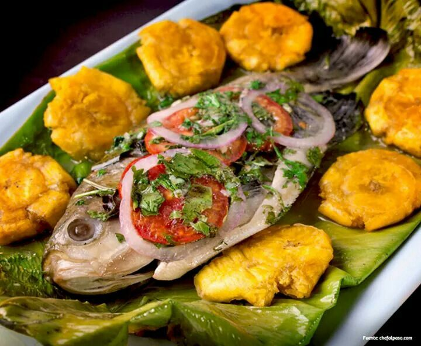
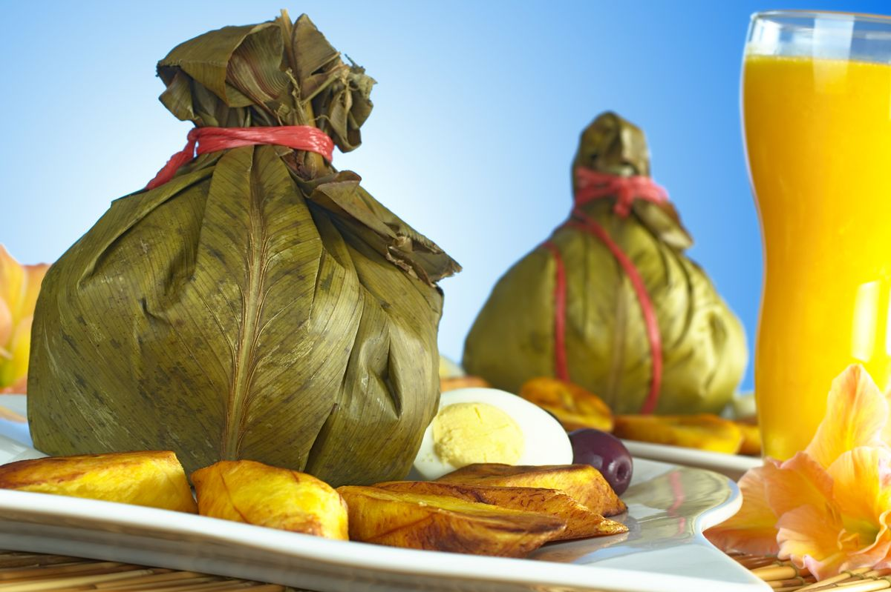
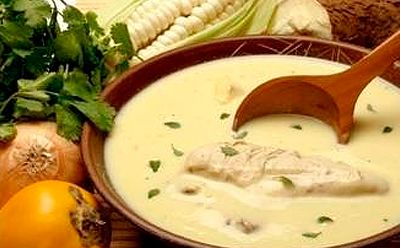

Gastronomía Moyobambina

Patarashca
Pescado cocido en hojas de bijao sobre brasas, con especias regionales. Muy emblemático.

Juanes
Arroz con pollo, huevo y aceitunas, envueltos en bijao y cocidos al vapor. Popular en festividades.

Inchicapi
Sopa espesa con maní, yuca, carne de gallina y hierbas locales. Un sabor inolvidable.

Tacacho con Cecina
Plátano verde majado con chicharrón y cecina, un plato contundente y tradicional.